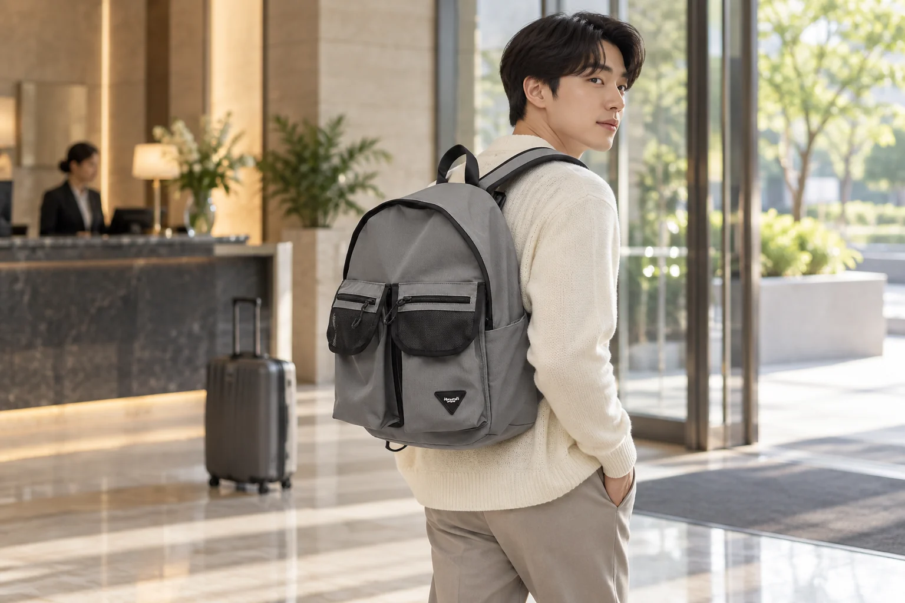

체크아웃 뒤 남은 하루를 들고 다니기

체크아웃 시간은 오전인데 돌아가는 교통편은 저녁인 날이 있습니다. 방에서 한꺼번에 꾸린 짐을 그대로 들고 나가면 낮 일정 내내 필요 없는 물건까지 운반하게 됩니다. 반대로 맡길 짐에 당장 필요한 것을 넣으면 다시 숙소로 돌아가야 할 수 있습니다. 마지막 날의 백팩은 여행 전체의 짐을 줄이는 방법보다 남은 몇 시간에 필요한 물건을 고르는 기준으로 생각해볼 만합니다. 보관할 곳과 다시 찾을 경로가 먼저 정해져야 합니다.
숙소나 보관 서비스를 이용할 계획이라면 가능한지부터 확인합니다. 언제 어디서 찾을 수 있는지, 맡기는 물건의 조건과 확인 방법이 무엇인지 안내를 읽어보세요. 무료인지나 저녁까지 맡길 수 있는지는 장소마다 확인할 정보입니다. 보관을 기대하고 일정을 잡은 뒤 불가능하다는 사실을 알기보다 체크아웃 전에 실제 이용 조건을 알아두면 남은 하루의 이동 방식을 바꿀 여유가 생깁니다.
짐을 찾으러 돌아갈 경로
보관 장소는 낮에 갈 곳과 귀가할 교통편 사이에서 다시 방문할 지점이 됩니다. 지도에서 마지막 방문 장소와 보관 장소, 역이나 터미널의 위치를 함께 확인합니다. 이동 시간뿐 아니라 짐을 받는 데 필요한 절차와 다시 정리할 시간도 생각해볼 수 있습니다. 서비스 종료 시간에 맞춰 도착하는 계획보다 안내를 확인하고 여유 있게 수령할 수 있는 순서를 정하면 됩니다. 실제 교통 상황과 현장 안내가 달라지면 일정을 조정해야 합니다.
보관할 수 없는 조건이라면 처음부터 직접 운반할 계획으로 바꿉니다. 낮에 방문할 장소의 가방 반입이나 보관 안내도 확인하세요. 모든 짐을 들고도 갈 수 있는 장소를 고르거나 이동 구간을 줄일지 판단할 수 있습니다. 더 작은 가방 하나를 추가하는 것으로 전체 짐의 관리가 해결되는 것은 아니므로 실제로 손에 들 물건의 개수와 이동할 방식을 함께 봅니다. 짐을 맡기는 선택과 직접 운반하는 선택에 각각 필요한 조건이 있습니다.
직접 가지고 다닐 물건
교통권과 신분 확인 수단, 연락 도구처럼 당일 다시 꺼낼 물건은 직접 관리할 짐에 둡니다. 그밖에 개인이 꼭 필요한 물건이 있다면 보관 서비스의 금지 품목과 안내를 확인해 분류합니다. 낮 동안 쓰지 않을 옷과 기타 물건은 맡길 수 있는 조건인지 따로 봅니다. 물건의 종류만으로 일괄 결정하기보다 지금부터 귀가할 때까지 언제 사용하는지를 적어보면 빠뜨린 것을 알아보기 쉽습니다.
숙소에서 나가기 전에 짐을 옮길 공간을 확보하고 두 묶음을 실제로 나누어봅니다. 백팩에 옮긴 물건은 한 번 꺼내보며 필요한 위치를 확인합니다. Himawari No.1230 제품 정보의 그레이 모델을 마지막 날의 개인 가방으로 검토할 때에도 기준은 낮 일정입니다. 예약 확인 자료와 연락 도구를 바로 찾을 수 있는지, 하루 동안 직접 들 물건을 담은 상태에서 이동을 이어갈 수 있는지를 자신의 실제 짐으로 확인하면 됩니다.

방을 떠나기 직전에는 가방을 닫기 전에 서랍과 책상, 충전하던 위치를 봅니다. 작은 물건이 캐리어나 숙소 수납칸에 남아 있을 수 있으므로 옮길 목록만 보지 않고 실제 자리를 확인합니다. 짐을 맡긴 뒤 다시 꺼내기 어려운 상황이라면 필요한 묶음이 백팩에 있는지 마지막으로 대조하세요. 보관 확인 표식이나 안내 화면은 나중에 찾을 위치까지 정해두면 수령 때 다시 자료를 찾는 일을 줄일 수 있습니다.
낮 일정에서는 반입 안내에 따라 필요한 물건만 꺼냅니다. 입장할 때 확인할 자료가 있다면 가방의 다른 짐과 함께 펼치지 않아도 되게 둡니다. 쉬는 장소에서 충전 도구를 쓰면 자리를 떠날 때 콘센트와 테이블을 함께 확인합니다. 맡긴 짐이 없는 동안 백팩에 새로 산 물건이나 포장재가 늘어날 수 있으므로, 계속 사용할 소지품의 자리가 밀리지 않게 필요한 순간에 정리하면 됩니다.
맡긴 짐을 다시 찾은 뒤
수령할 때는 안내받은 확인 수단을 제시하고 자신의 짐인지 개수와 외형을 대조합니다. 비슷한 가방이 있다면 자신의 표식을 확인하고, 추가로 맡겼던 별도 물건이 있었는지도 봅니다. 받자마자 이동 통로에서 모든 짐을 합치기보다 정리할 수 있는 위치로 옮길 수 있습니다. 곧 교통편을 이용해야 한다면 백팩에 그대로 남길 물건과 큰 짐으로 옮겨도 되는 물건을 짧게 판단하세요.
예를 들어 낮에 꺼낼 예정이었던 물건을 더는 쓰지 않는다면 큰 짐으로 옮기는 구성을 생각할 수 있습니다. 반대로 교통권과 휴대전화는 귀가할 때 계속 사용할 수 있으므로 직접 찾을 위치를 유지합니다. 어느 물건을 반드시 옮겨야 한다는 규칙보다 이어지는 이동에 맞는 배치를 고르는 것입니다. 낮에 구입한 물건이 있다면 포장과 외형을 먼저 보고 기존 짐을 누르지 않는 운반 방법을 확인합니다.
보관 확인 표식은 서비스를 마친 뒤 더 필요한지 안내에 따라 판단합니다. 가방에 임시로 넣은 여행 안내와 영수증도 귀가 중 바로 필요한 것만 남겨둘 수 있습니다. 짐을 다시 찾았다고 일정을 마친 것은 아니므로 탑승이나 환승에 사용할 자료는 그대로 관리합니다. 이동이 끝나기 전에 모든 것을 큰 짐 깊은 곳으로 넣으면 다시 꺼내야 하는 상황이 생길 수 있으니 마지막으로 쓸 물건부터 생각하면 됩니다.
집에서는 마지막 날의 임시 배치를 풀어둡니다. 낮에 쓰던 개인 짐을 평소 자리로 돌리고 여행용 자료는 보관 목적에 따라 정리합니다. 젖은 물건이나 포장재가 남아 있다면 먼저 꺼내 상태를 확인하세요. 다음 여행에서 참고할 것은 짐을 얼마나 맡겼는지보다 수령 장소까지 돌아가는 길과 직접 들고 다닌 물건이 실제로 필요했는지입니다. 그 기록이 있으면 다음 체크아웃 날에도 보관 조건과 남은 일정에 맞춰 준비를 다시 정할 수 있습니다.